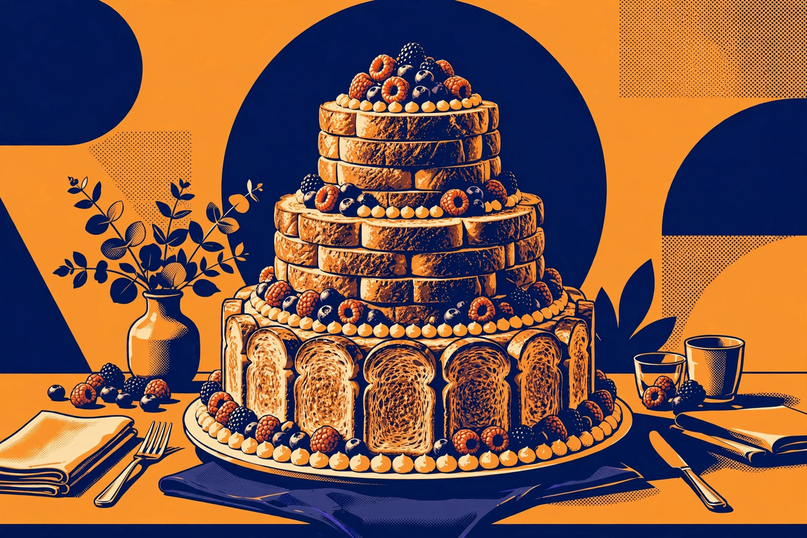
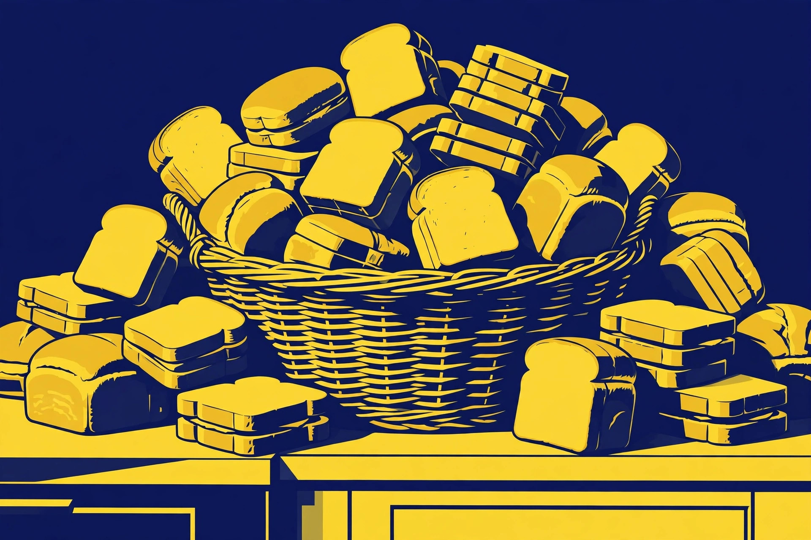

The Toast Wedding Cake: A Literal Guide

Ask the internet for "toast wedding cake" and it answers with champagne-flute gift sets and guides to whether you cut the cake before the speeches. The literal guide — how to build an actual wedding cake out of toast — is the one article nobody wrote. This is a failure of the entire internet, and we are correcting it now.
The toast wedding cake is exactly what it sounds like: a tiered cake in which every tier is toast. It is the centerpiece for a couple whose love language is carbohydrates and whose budget language is also carbohydrates.
Tier engineering: a serious plan for a silly object
A real wedding cake uses dowels and cake boards. A toast wedding cake uses the same principles with worse materials. Here is the build, in order:
Step 1: Build the base tier. Arrange toasted slices in a tight ring on a large round serving platter, edges overlapping like shingles. Fill the center with a second, smaller ring, crusts facing out. This is your foundation. Press each slice flat; any slice that rocks gets eaten by the builder. Quality control is delicious.
Step 2: Add the middle tier. Lay a round cake board or a stiff cardboard round (wrapped in foil) across the base tier, then build a smaller ring of toast on top of it. The board does the structural work; the toast does the looking-like-a-cake work. This division of labor is the whole secret.
Step 3: Add the top tier. A second, smaller board, and a final ring of three to four slices standing in a tight circle, or a single proud slice balanced upright in the center like a tiny edible obelisk.
Step 4: Decorate. This is where spreads earn their keep. Cream cheese piped in dots along the tier edges reads as frosting from six feet away. Fresh berries fill the gaps between slices. A sprig of rosemary on top reads as "rustic." Everything reads as something if you stand far enough back.
Step 5: Photograph immediately. A toast cake is a mayfly among desserts. Take the photos now, in good light, before gravity and humidity begin their negotiations.
The decision framework: which bread does what
Not all bread is cake material. Run your candidates through this framework:
Base tier: you want the firmest, most uniform slices available — thick-sliced white sandwich bread, toasted to a sturdy medium. The base tier carries weight; soft bread carries regrets.
Middle tier: standard sandwich bread, your everyday workhorse. It only has to hold itself up and look photogenic, which is exactly what it was born to do.
Top tier: use the prettiest bread you own. Sourdough with a dramatic crust, a glossy brioche slice, whatever makes the photographer happy. The top tier holds nothing but symbolism, and symbolism is light.
Rule of thumb: if a bread cannot survive being held vertically for ten seconds without folding, it is a filling, not a structure. Promote accordingly.

The cost estimate
A toast wedding cake is possibly the cheapest wedding cake ever constructed by a conscious adult. Bread prices checked on October 10, 2026: a 675 g loaf of Wonder White at $3.99 CAD, or a 675 g loaf of Dempster's White at $5.99 CAD (a three-loaf bundle listed at $11.99 CAD). Two to three loaves cover a three-tier build with slices to spare for the builder's quality control. Call it roughly $8 to $18 CAD for the bread (the arithmetic: two $3.99 loaves at the low end, three $5.99 loaves at the high end), plus whatever spreads and berries you were going to buy anyway.
The food-safety clock
Here is the serious paragraph, wearing its serious hat. The U.S. Department of Agriculture's Food Safety and Inspection Service advises that perishable foods left at room temperature for more than two hours must be discarded — one hour if the temperature is above 90°F. Bacteria grow rapidly between 40°F and 140°F, and cold perishable foods should be kept at 40°F or below.
The toast isn't the perishable part of this equation — but the moment you add cream cheese, butter, or any spread that needs refrigeration, the two-hour clock starts. Plan the build so the cake is assembled close to display time, photograph it within the window, and either serve it or retire it when the clock runs out. A wedding cake that sends guests home with regrets is a failure of hospitality, not of engineering.
What success looks like
Success is a three-tiered toast structure that survives the photographs, gets a genuine laugh from the wedding party, and feeds the late-night crowd before the two-hour clock expires. If one tier leans, that is character. If all three tiers lean, that is modern art. Either way, you built a wedding cake out of toast, which puts you ahead of every etiquette blog on the first page of the search results.